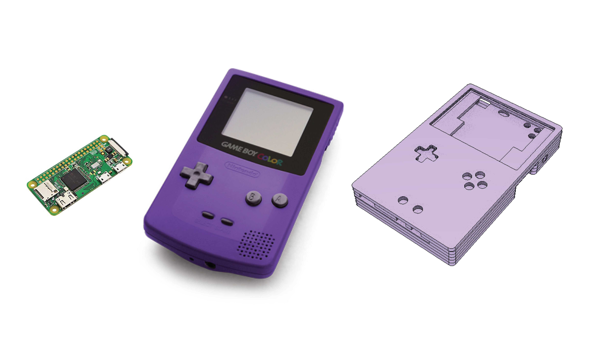

raspberry pi game console
my gaming style is both on the go and pixelated. so when the raspberry pi zero came out, it was the final push i needed to start working in CAD software and buy a CNC.
with lots of examples out there for gaming consoles and r-pi projects, i decided to pick and choose what i thought were the best aspects of handheld gaming devices over the years.
with lots of examples out there for gaming consoles and r-pi projects, i decided to pick and choose what i thought were the best aspects of handheld gaming devices over the years.


some different call outs were a directional pad, 4-buttons (a, b, x, y), start and select buttons, and left & right shoulder buttons.
one big reason for the shoudler buttons beyond simply which games you could play, is the natural position of how one holds the device. your index fingers natural curl around.
one big reason for the shoudler buttons beyond simply which games you could play, is the natural position of how one holds the device. your index fingers natural curl around.
my first prototype was completely hand made. while all the buttons, screens, raspberry pi - everything worked apart from one rather crucial aspect...
i did not correctly account for the space i'd need for the wires and the guts wouldn't fit inside the case.
i did not correctly account for the space i'd need for the wires and the guts wouldn't fit inside the case.


i learned a lot from that prototype- i re-thought the size of the buttons and investigated the rest of the parts: screen and driverboard, power converter, digital-to-audio-converter, headphone jack, graceful-shutdown circuit to save the raspberry pi, etc.
most importantly - creating my own copper-trace breadboard do do away with all these wires. both reducing the overall size of the console and making it more efficient in design.
most importantly - creating my own copper-trace breadboard do do away with all these wires. both reducing the overall size of the console and making it more efficient in design.
all of this planning really relied on my ability to accuratly produce what i had designed.
thus enters my plunge into the world of CNCs. i chose a cnc over a 3D-printer because the subtractive process gave me a larger choice of materials. i wanted this thing in atomic purple if it was going to break the bank.
thus enters my plunge into the world of CNCs. i chose a cnc over a 3D-printer because the subtractive process gave me a larger choice of materials. i wanted this thing in atomic purple if it was going to break the bank.


by this time i had to part ways with the project but left it in a good place i believe.
i need to setup and calibrate my cnc, begin etching the circuit pattern into the copper clad board i have, and finally finish these devices.
i need to setup and calibrate my cnc, begin etching the circuit pattern into the copper clad board i have, and finally finish these devices.